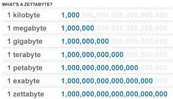
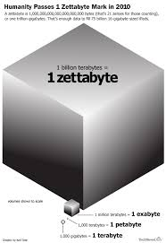

É uma plataforma de videoconferência amplamente utilizada para comunicações remotas, reuniões virtuais, webinars e aulas online. Ele oferece recursos como videochamadas em grupo, compartilhamento de tela, salas de breakout e integração com outras ferramentas de produtividade.
 Um zettabyte é uma unidade de medida de armazenamento de dados equivalente a 1 trilhão de gigabytes. É usado para descrever grandes quantidades de dados em sistemas de armazenamento, redes e computação em nuvem. Com o crescimento exponencial da quantidade de dados gerados e armazenados globalmente, o zettabyte se tornou uma unidade de medida cada vez mais relevante.